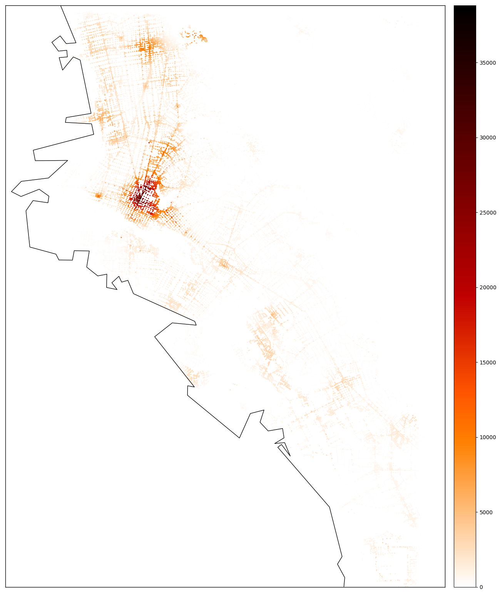

Using an UrbanAccess network with Pandana¶
Pandana (Pandas Network Analysis) is a tool to compute network accessibility metrics. If you have used UrbanAccess to generate your integrated transit and pedestrian network, it has already been formatted for use with Pandana and you can use Pandana right away to compute accessibility metrics.
There are a couple of important reminders about using an UrbanAccess network with Pandana:
- By default, UrbanAccess generates a one way network. One way means there is an explicit edge for each direction in the edge table. Where applicable, it is important to set any Pandana
two_wayparameters toFalse(they areTrueby default) to indicate that the network is a one way network. - As of Pandana v0.3.0,
node idsandfromandtocolumns in your network must be integer type and not string. UrbanAccess automatically generates both string and integer types so use thefrom_intandto_intcolumns in edges and the index in nodesid_int. - UrbanAccess by default will generate edge weights in the column
weightthat represent travel time in units of minutes. Even though Pandana’s impedance parameters are sometimes calleddistanceyou can use units of minutes here.
For reporting issues related to Pandana and for Pandana documentation see the Pandana repo directly.
Examples of using an UrbanAccess network with Pandana¶
The examples below only depict isolated code snippets to provide a general idea of how each function can be parametrized. See the demo for a full workflow.
Creating a Pandana Network object:
transit_ped_net = pdna.Network(integrated_ua_net.net_nodes["x"],
integrated_ua_net.net_nodes["y"],
integrated_ua_net.net_edges["from_int"],
integrated_ua_net.net_edges["to_int"],
integrated_ua_net.net_edges[["weight"]],
twoway=False)
Running an aggregation query using a total number of jobs variable for a travel time threshold of 45 minutes:
jobs_45 = transit_ped_net.aggregate(45, type='sum', decay='linear', name='jobs')
Running a nearest POI query to parks with a travel time threshold of 45 minutes:
nearest_parks = transit_ped_net.nearest_pois(distance=45, category="parks", num_pois=2, max_distance=0)
Examples of Pandana results using an UrbanAccess network¶
Examples of a Pandana accessibility to jobs aggregation query in Oakland, CA using an UrbanAccess integrated transit and pedestrian network for three travel time thresholds 15, 30, and 45 minutes (Note: these plots are generated using Pandana’s plot functions and are plotting the network nodes.)
Jobs accessible within 15 minutes 
{kind=link}
Jobs accessible within 30 minutes

Jobs accessible within 45 minutes

Examples of a Pandana nearest POI query to hospitals and parks within a 30 minute travel time in Oakland, CA using an UrbanAccess integrated transit and pedestrian network (Note: these plots are generated using Pandana’s plot functions and are plotting the network nodes.)
Travel time to nearest hospital within 30 minutes

Travel time to nearest park within 30 minutes